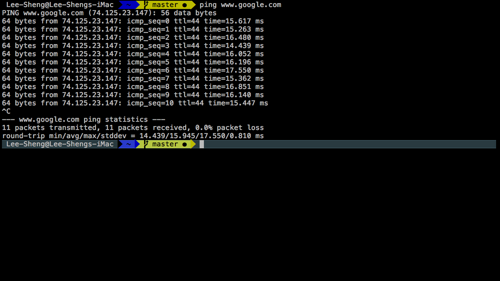
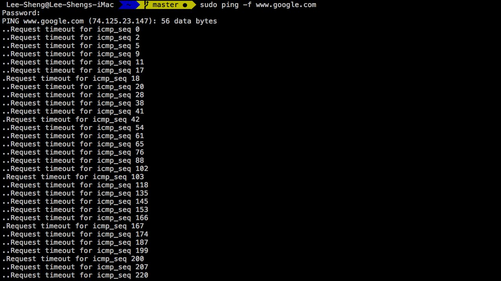
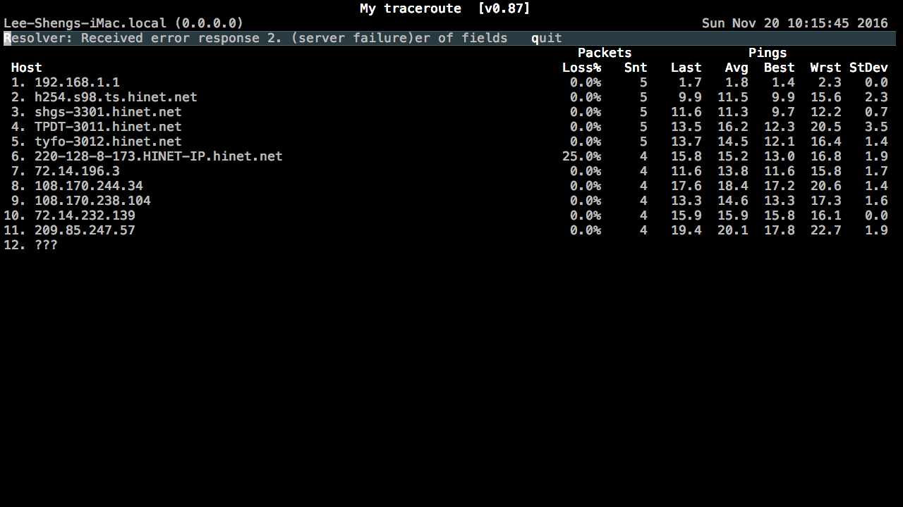
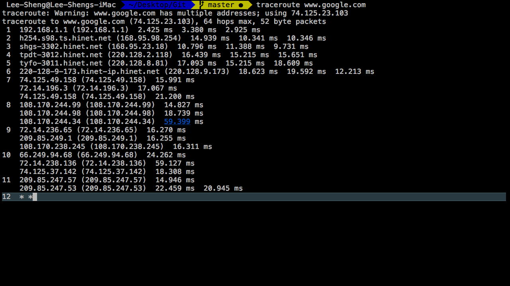

Network Diagnostic Tools
Nov 18, 2016
Sometimes there will be unexpected while playing with servers , so here I will try three different network diagnostic tools to trace the package and guess what may be happened .
1.Ping
Synopsis
- The ping command is usually used as a simple way verify that a computer can communicate over the network with another computer or network device.

- In above example , the ping command is used to ping the hostname www.google.com . The report tells me each ICMP echo request message sent to www.google.com was returned successful.

Don’t try to use -f (Flood) option , some firewalls or hosts can believe it’s a DoS attack and drop the icmp packets silently.
2.MTR
Synopsis
- MTR combines the functionality of the Traceroute and Ping programs in a single network diagnostic tool.
Install
|
|
Export environment variable for further use
|
|
MTR Sample

- Above you can see all packets of data travelling from my host to destination host . Unfortunately, I don’t want to dig this here . If you want learn more , please go here
3.Traceroute
- Traceroute print the route packets trace to network host

Above you can see your all packets of data travelling just likes MTR , but one of the different part is you can see the router transfer inside one specify router . See No.7 ~ No.11 at above sample .
more reference DigitalOcean , here.